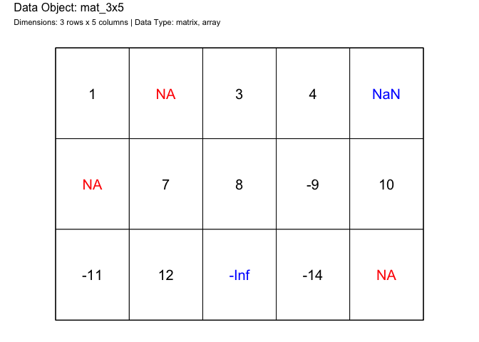
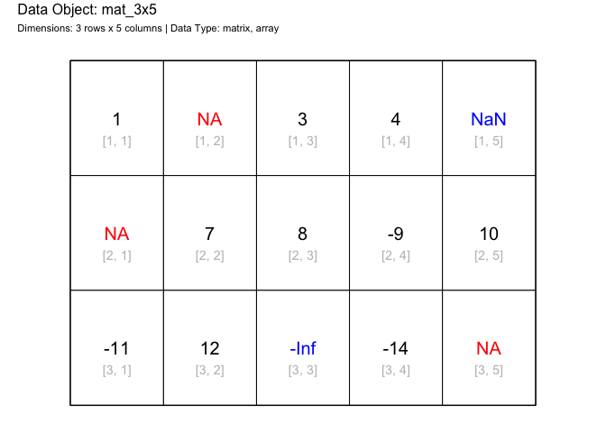
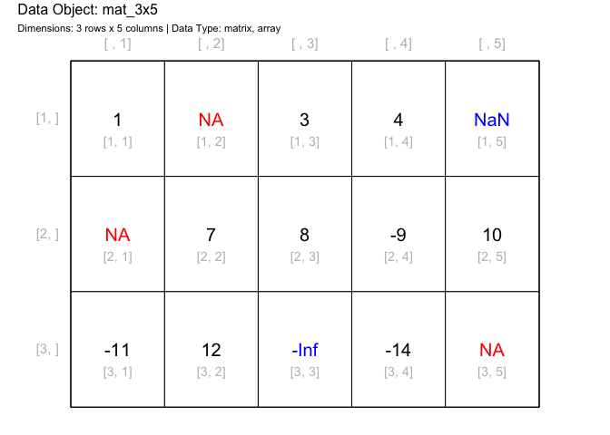
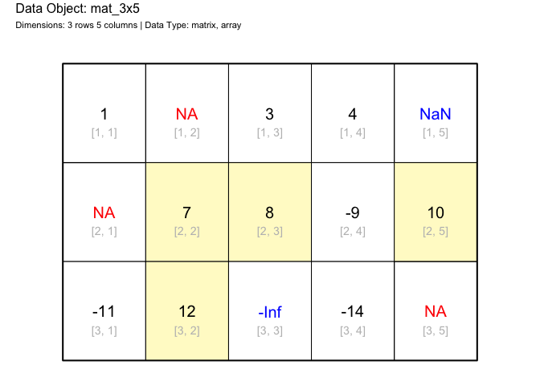
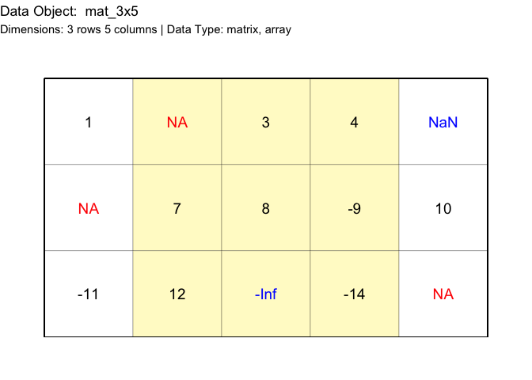

The goal of drawr is to draw different R data structures on graphs.
Installation
You can install the development version of drawr from GitHub with:
# install.packages("devtools")
devtools::install_github("coatless-rpkg/drawr")Design
The package is designed to take advantage of base R graphics alongside ggplot2. We’re providing two different implementations for each system under the naming scheme of:
-
draw_*(): base R graphics -
gdraw_*():ggplot2
Example
Take for instance we have a matrix that looks like so:
mat_3x5 = matrix(
c(
1, NA, 3, 4, NaN,
NA, 7, 8, -9, 10,
-11, 12, -Inf, -14, NA
),
ncol = 5, byrow = TRUE)
mat_3x5
#> [,1] [,2] [,3] [,4] [,5]
#> [1,] 1 NA 3 4 NaN
#> [2,] NA 7 8 -9 10
#> [3,] -11 12 -Inf -14 NAWhat if we wanted to see the contents layed out with their indices?
# Load the library
library(drawr)
# Graphic of matrix data structure using base R graphics
draw_matrix(mat_3x5)
# Disable showing the cell indices
draw_matrix(mat_3x5, show_cell_indices = FALSE)
# Disable showing any indices
draw_matrix(
mat_3x5,
show_row_indices = TRUE, show_column_indices = TRUE,
show_cell_indices = FALSE)
# Highlight cells over a specific value
draw_matrix(mat_3x5, highlight_cells = mat_3x5 > 4)
We can achieve similar results with the ggplot2 function.
# Graphic of matrix data structure using base R graphics
gdraw_matrix(mat_3x5)
# Highlight cells over a specific value
gdraw_matrix(mat_3x5, highlight_cells = mat_3x5 > 4)